乐队档案
历届吉协乐队介绍，按成立时间排列。
前言
本部分内容来自北交吉协2014年至今的公众号文章及部分访谈记录。受限于资料来源， 我们难以仅凭现有材料完整还原所有曾在北交活动过的乐队及其相关信息。因此，部分早期乐队乃至近年新组建的乐队，其介绍难免存在一定偏差或资料缺失。 若读者发现文中任何错误或不足之处，敬请联系网站维护人员或吉协内部相关人员。我们衷心感谢读者的批评与指正。
历届乐队介绍
有糖无糖（2025-至今）
我们是要组一辈子乐队的好朋友啊［哭泣］［哭泣］
主唱：全糖🍬
吉他：七分糖🍬
鼓手：五分糖🍬
贝斯：三分糖🍬
键盘：无糖🍬
明湖熏酱潜水热狗(2025-2026)
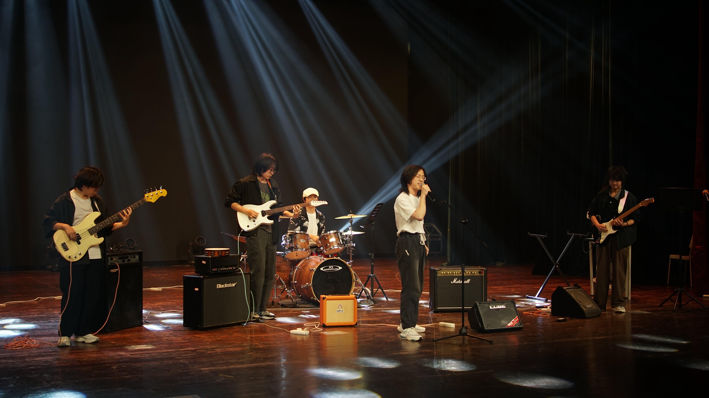
明湖熏酱潜水热狗是明湖最近施工挖出来的一根潜水的熏酱热狗，他们未来可期。
主唱：凌洛尘
吉他：xxxaix、卡拉比丘高手
鼓手：皮纳特
贝斯：纳巽
Limgrave（2026-至今）
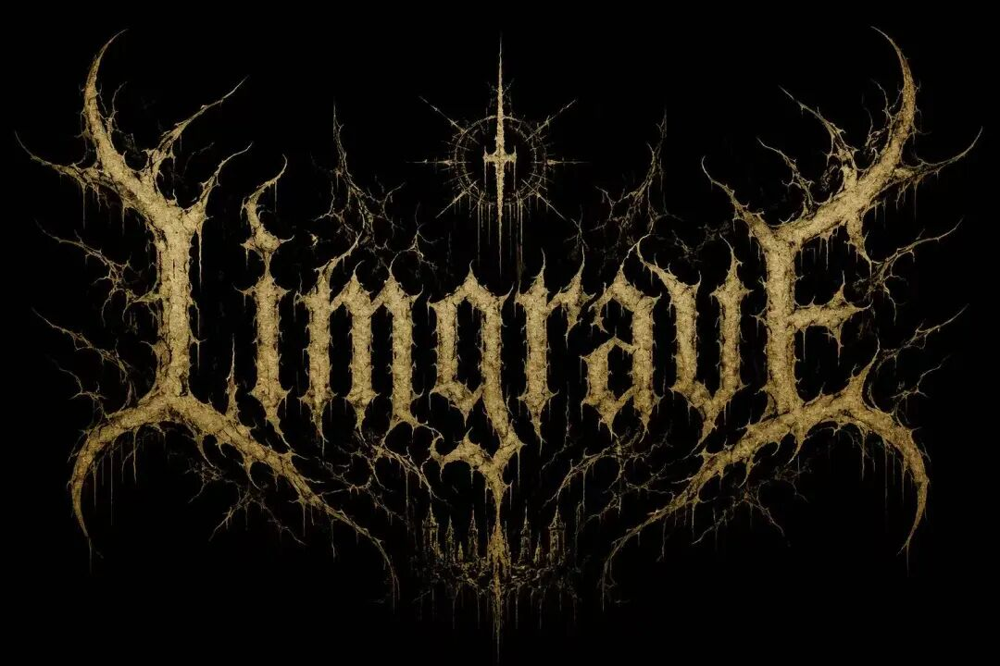
Limgrave是北交建校以来唯一一支死亡金属乐队，成员无恶不作，臭名昭著，擅长用劲爆残酷的riff摧毁一切。
吉他：野蛮低素质男孩、Quentin Stoll【法】
键盘：广东人鲜嫩
鼓手：向姚
主唱：还没找到
贝斯：查无此人
BetterThanDeath（2026-2026）
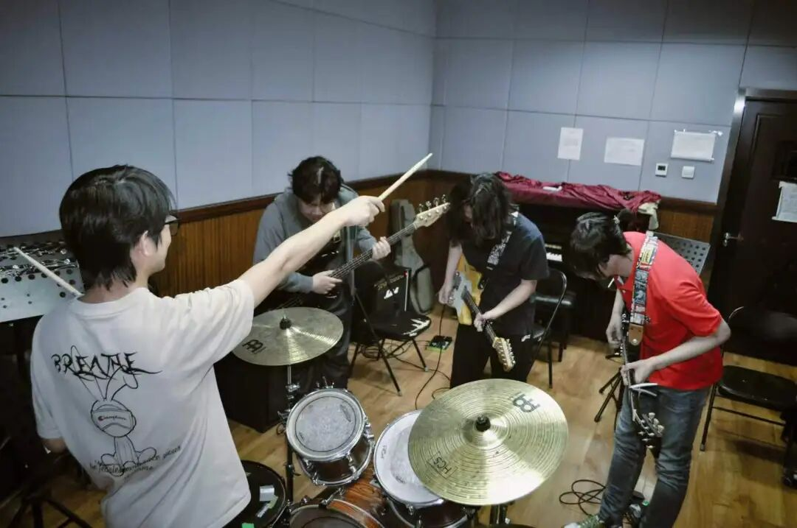
屙屎是什么意思？AI说是拉屎的意思。那我能屙你的手吗？AI告诉我不是这样用的，大家都说拉，拉听起来顺口，屙听起来笨……但是我想屙的还有很多，屙孤独、屙烦恼、屙秘密、屙等待...我总是一边得到一边屙掉。
Dr：hzzz
Gt：CANTIXE、夏草
Ba&Cl：Azir
路恩&鲸鱼旧线（2025-至今）
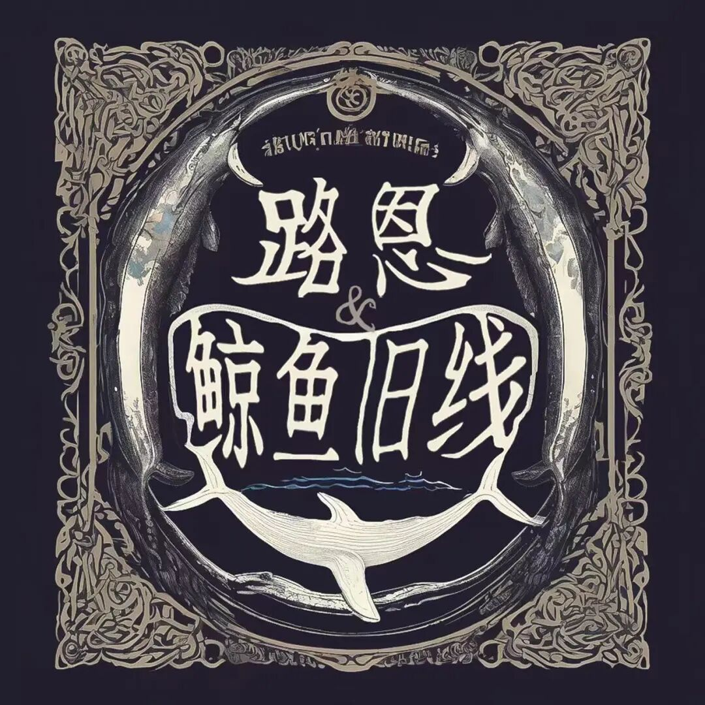
内心的希望创造出美的旋律，现实的荒原生长出疲惫的愤怒，伴随着脆弱性的嘶吼， 勇敢地展示出一种不迎合而又难以捉摸的力量感，暴露出脆弱，沮丧和缺陷同时又歌唱着向上和接受对音乐边界及市场的探索，以及多年来对摇滚乐的潜心热爱， 最终确立了他独有的唱腔和演奏气质：通过音乐、态度、声音，以及澄澈的情绪，发觉渴望被听到的声音：垃圾乐(grunge)朋克乐(punk)的不羁与颓废， 抑或是细腻的情感和悦耳的流行乐(pop)旋律。不哗众取宠，只是喧闹地、旋律简约而极为原创地诉说着。
Moto（2025-至今）
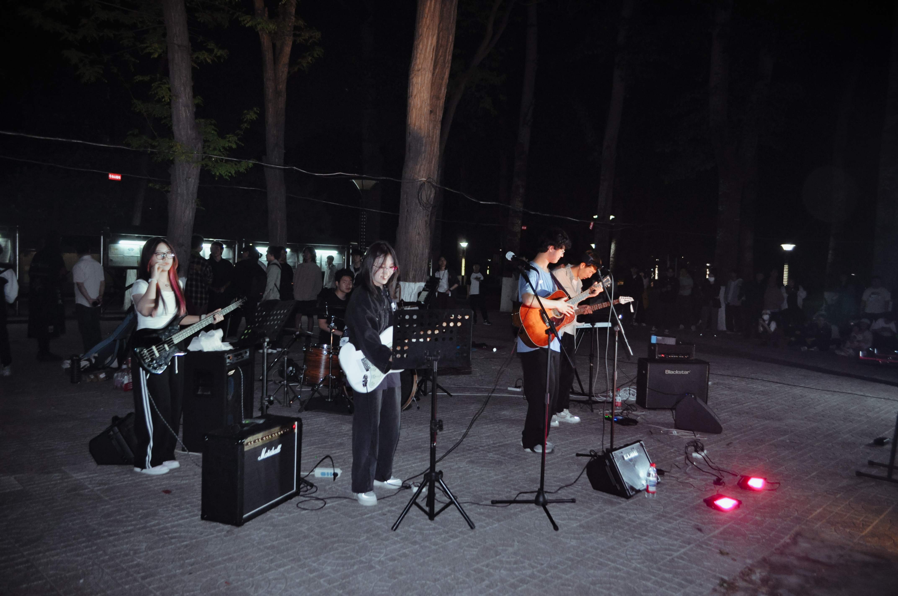
这里没有穷途末路，只有纯粹的灵魂！
主唱/木吉他：房纪委
节奏吉他：唐安淇
贝斯：黄佳懿
键盘：张皓年
鼓：赵杰雄
主音吉他：邹昊田
Evenfall（2025-至今）
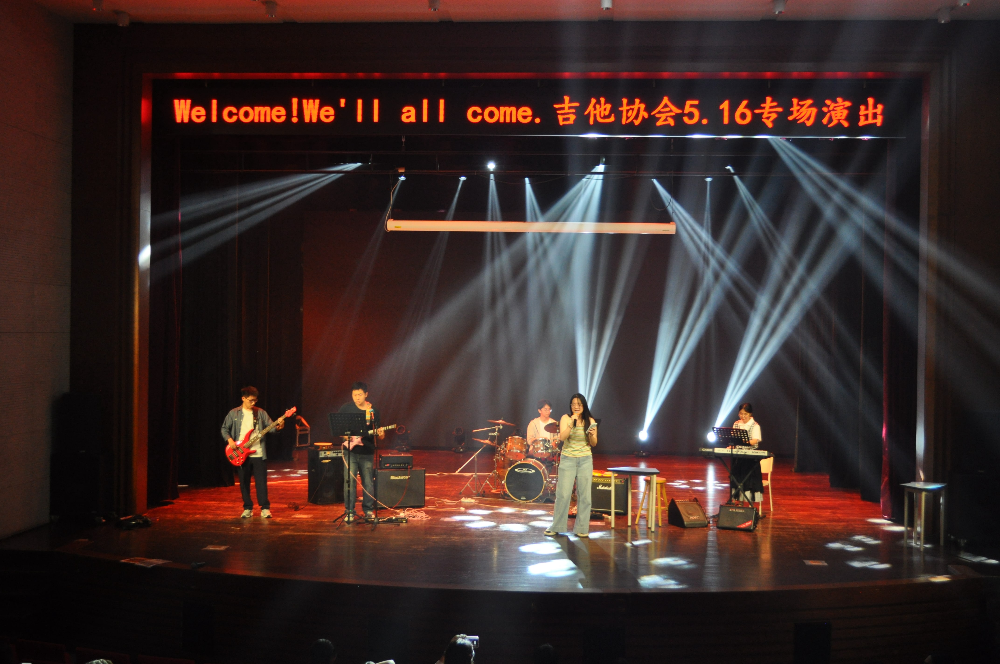
失眠的刺ACG多文化半才乐队。
主唱：忧门螺杆菌
吉他：游离麻仓子asakura、LaAkue
贝斯：狄炀DDY
鼓手：后藤一里
键盘：淡水鱼
hitolead（2025-至今）
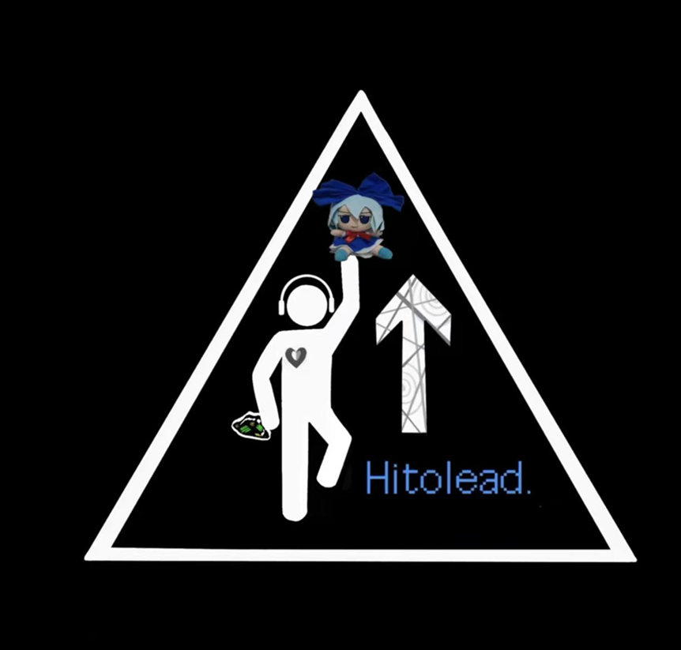
因热爱而组成的乐队！
Vol.Gt：艾特
Key：绮楼花咲
Get：摸儿卡
Ba：芜源
Dr：蓝屿
秘封音像（2025-至今）
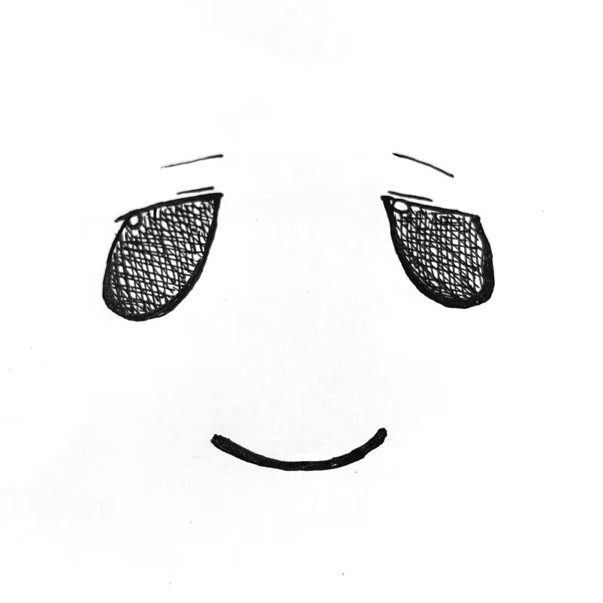
欧西给欧西给欧西给欧西给欧西给欧西给欧西给欧西给。
主唱：咪啪
吉他：摸摸卡、游离
鼓手：千咲
键盘：strix nebulosa
贝斯：悲事
载乐思 Zealousi（2025-至今）
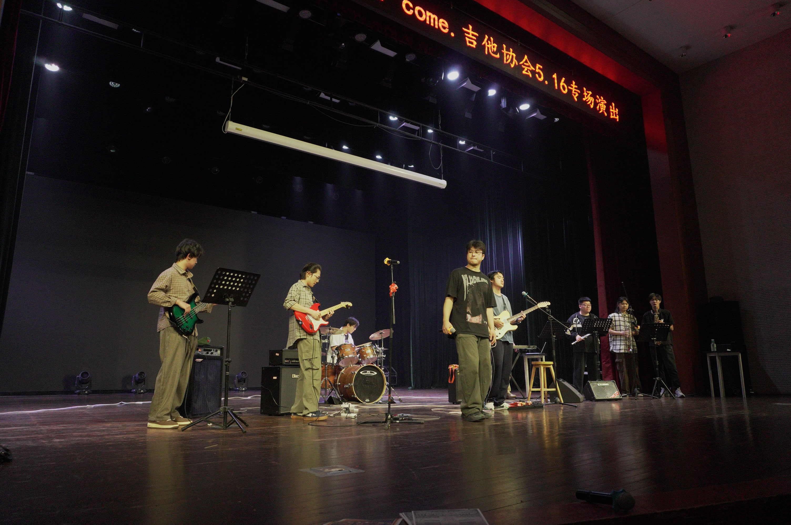
北郊有密林，祝君出重围。
支援主唱：严培尧
主唱/节奏吉他：刘嘉梁
主音吉他：吴航伟
鼓：李昕航
贝斯：何楚奇
小号：禹浩男
萨克斯：康子涵
键盘：李奕杉
Summer Bowl（2025-2026）
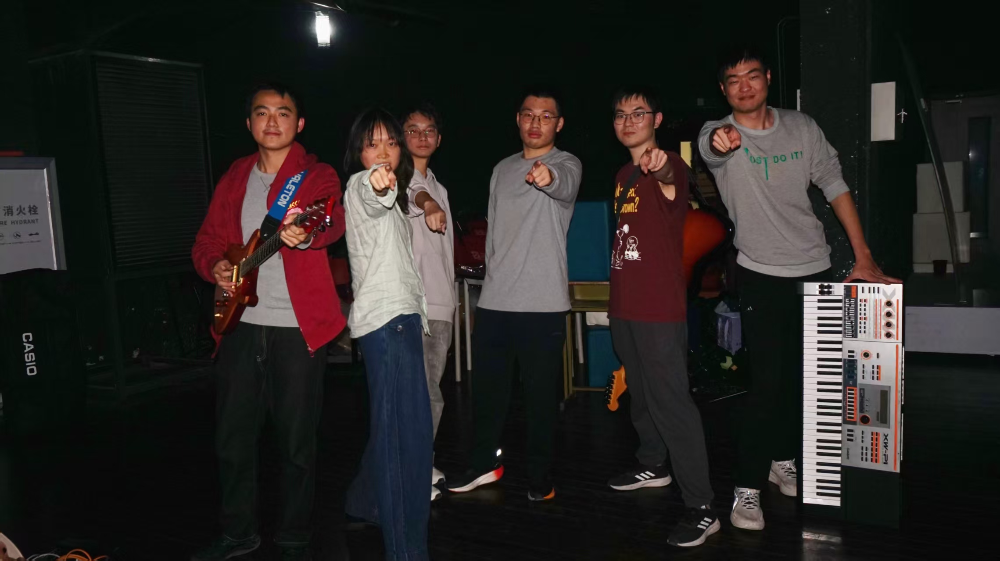
一起瞎玩。
从夏天的结尾开始，到夏天的开始结束。
吉他/主唱：艺飞、桐乃
键盘：博哥、小熙
贝斯：小为
鼓：小轶
MeaN LaKe （2025-2027）
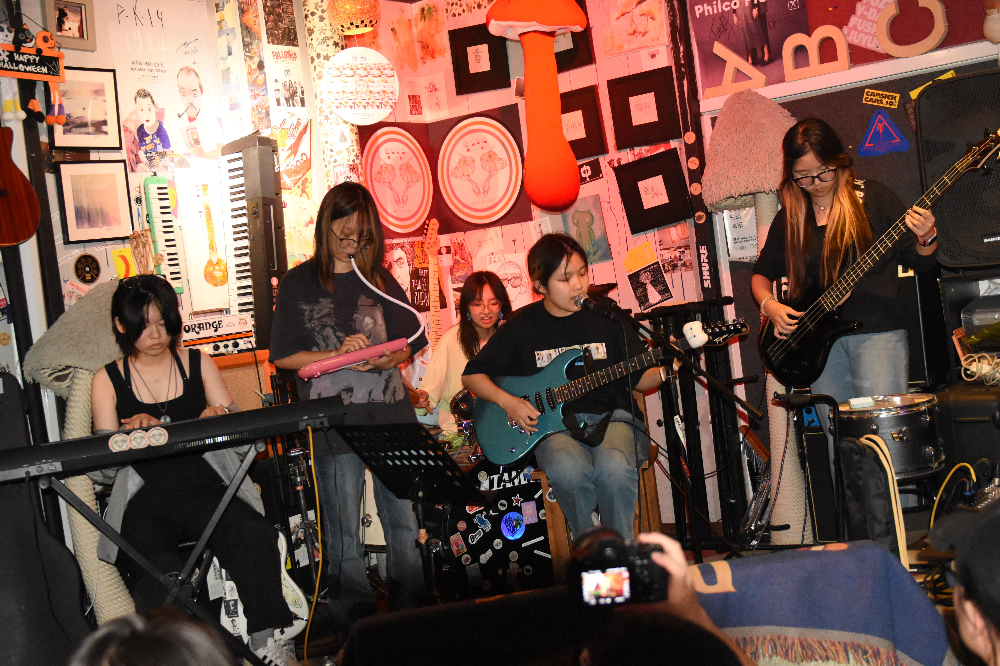
来自北京交通大学的全女子乐队，成立于25年秋。
我们把表达汇聚成湖。
吉他：林昀潼、唐安淇
贝斯：黄佳懿
键盘：夏妤萌
鼓：马岚琪
ASTRAY（2025-至今）
迷茫且依然前行的迷途之子们，想打破次元之间的壁垒，以JPOP和ACG音乐为主的曲风，引发对未来和青春的无限遐想，带来最闪闪发亮心跳不已的表演！
VO：黑猫
GT：游离麻仓子ASAKURA、SKILLOWER
BS：RWTEWR
KY：林C
DR：苏西
谐响Synthonia（2025-至今）
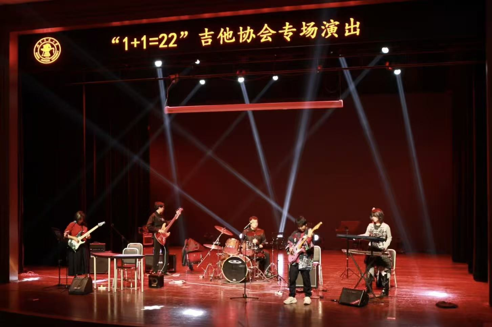
大家好我们是谐响，是一支想成为人类的乐队（原二次元ACG乐队）！请大家多多关照吧！
主唱：林姐
键盘：Miyochi
吉他：耄
贝斯：麻布
鼓手：千咲
AMBLELIGHT（2024-2025）
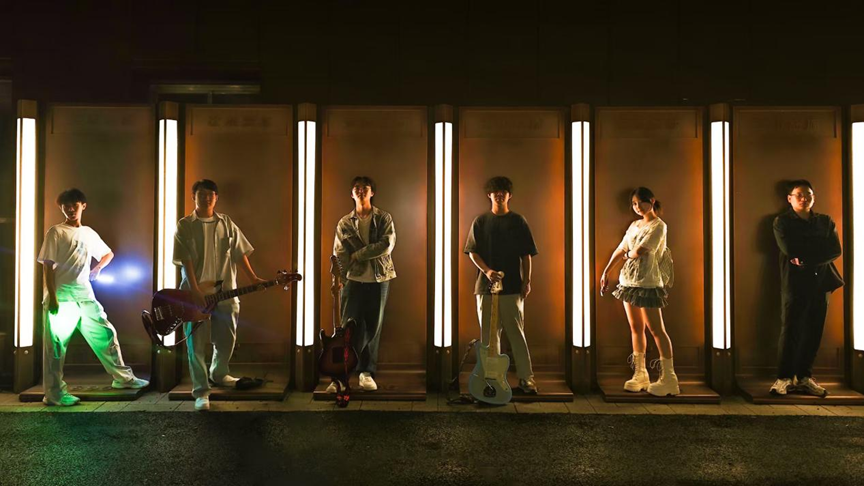
大家好我们是Amblelight。Amblelight的意思是漫光，寓意是漫步趋向黎明。乐队的宗旨是让每个成员都享受乐队，开开心心组乐队！
主唱：5302
吉他：鸽子一定行、rain
鼓手：蓝屿
键盘：乌林鸮
贝斯：麻布
脉搏（2024-至今）
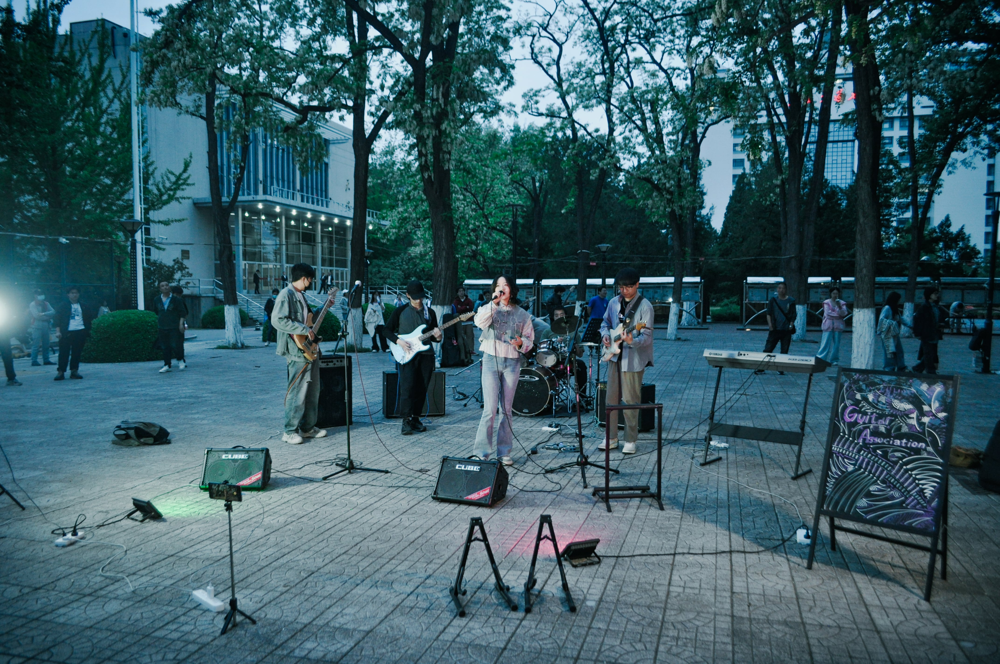
主唱：秋刀鱼
吉他：Ko-Olu、师政
键盘：zozo
贝斯：麻布
鼓：千咲
小提琴：3C老师
星联结（2024-至今）
群星连结的众人，梦境穿梭的曲目，打破次元之间的壁垒，以jpop和acg音乐为主的曲风，带来对未来和青春的无限遐想。
队长/Guitar1：欣羊
Guitar2：asakura
Keyboard/Vocal：黑猫
Drum：李洵
Bass：阿松
知更鸟（2024至今）
成立于2024年秋季。乐队风格多样，目前主要演奏朋克、摇滚等曲风，未来还计划探索流行、ACG等多元领域。当前乐队致力于更好地翻唱各位成员喜爱的乐曲，原创曲目正在筹划中，敬请期待。
吉他：read、kuhhhhh
贝斯：妙蛙不是种子
鼓：夢的光點
主唱：还是会想你
键盘：椎名真白
FLY OWL（2024-至今）
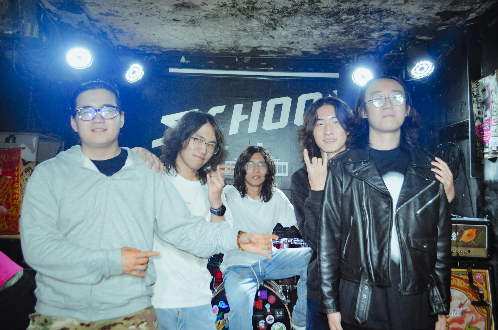
乐队成员深受XJAPAN、Dream Theater、The Beatles、Metallica等大牌经典乐队影响，致力于对摇滚、硬摇滚、流行朋克、金属等风格的研究，如同乐队的名字飞枭一样，给予听众在听觉上的冲击。HERE WE ARE TO MAKE THINGS HAPPEN.
鼓手：wzy
主唱/节奏吉他：lxy
贝斯：zzf
主音吉他：lhr
键盘：lys
放空faire le vide（2024-2025）
主唱：王子淇
贝斯：何倩
吉他：吴青涵
鼓手：杜怡霖
键盘：冯智
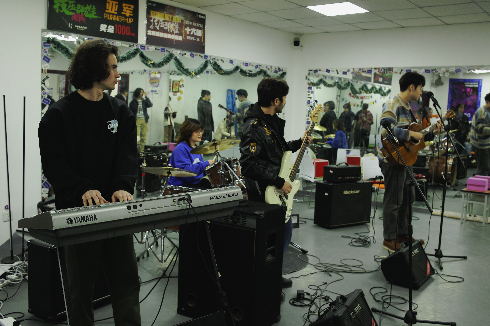
原阵容:
主唱：阮国金
吉他：王子淇 张盛【法】
贝斯：郭思妤
键盘：冯智【法】
鼓手：杜怡霖
退化立场（2023-2025）
退化立场是一支组建于2023春季的独立乐队，他们是生活在温吞的新时代的四个青年，缺失伟大的志向和深刻的思想，他们的音乐里只有看似坚定的立场，和伪装平和的语气。
Vocal：凌政
Guitar：吴正元
Bass：陈思秋池
Drum：杨一宁
unknown（2023-2025）
成立于2023年冬。
吉他：马粲懿、魏一平、刘明辉
鼓：何宇韬
主唱：小孜、仙琵力
山园祈祷（2023-2026）
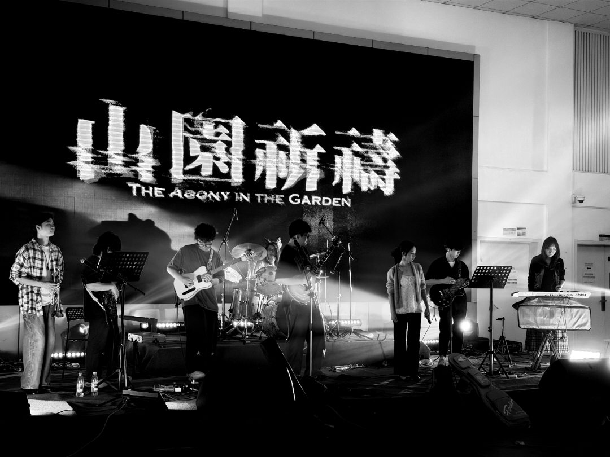
我不再关心月亏月盈，你被海浪激起的麦田靠近。山骨刻进失真轰鸣的断层，园墟之上悬着未锈的钟。
风格：独立摇滚。
主唱：晨晨 Niyoah
吉他：莱克伍德、枫夜
贝斯：Viz
键盘：广东人鲜嫩
鼓手：Miracle-mile
管乐：Jarvis
Freetown（2023-2025）
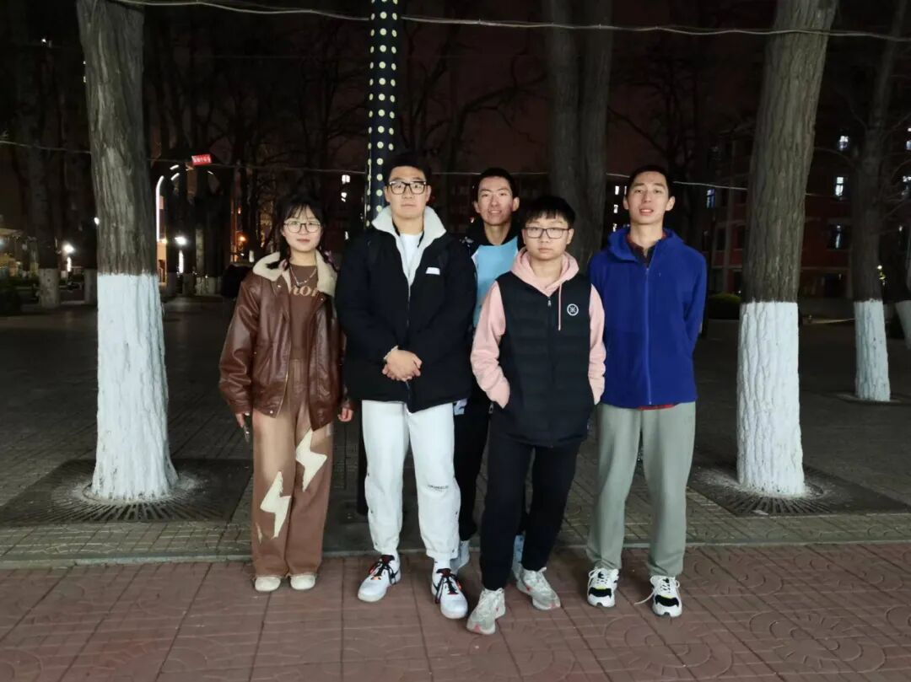
风格：Punk
主唱：Bernard
吉他：汪润泽、吴青涵
贝斯：DejA-Vu
鼓：李锦昊
三鱼（单人活动）
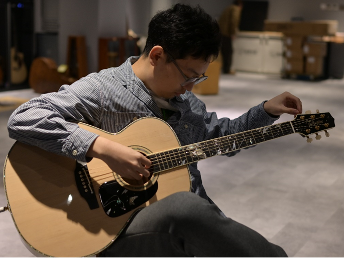
邓世博，机电学院硕士，学习指弹两年半。指弹是一种比较新的吉他演奏形式，它将各种技巧融合，通过纯乐器演奏的方式表现出来。
离域（2023-2025）
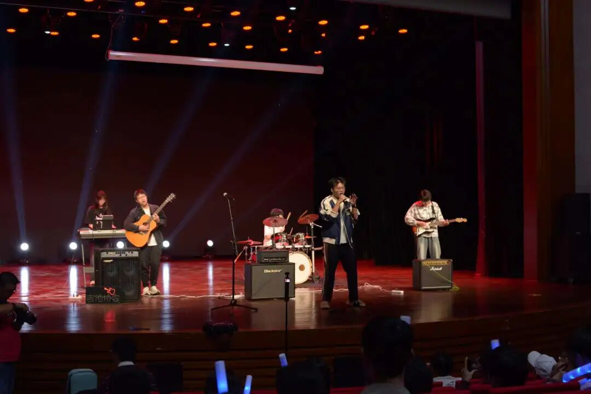
音乐风格主要是流行、民谣以及轻摇滚。离域致力于将流行与民谣的元素融合，在未来发展出更好的音乐。
主唱：陶柏安
吉他：王子略、张舵
键盘：王凯雯
鼓：齐云宁
iDVDs（2023-2024）
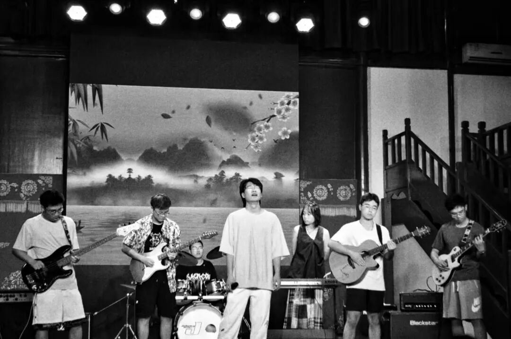
Individuals！不同的人向往不同的天空，但和而不同的我们也会有共同的旋律。尝试融入，拒绝同化。
主唱：荣哥
主音吉他：刘哥
节奏吉他：乐乐
木吉他：小朱
贝斯：小为
键盘：小熙
鼓：小天
六点将近（2023-2026）
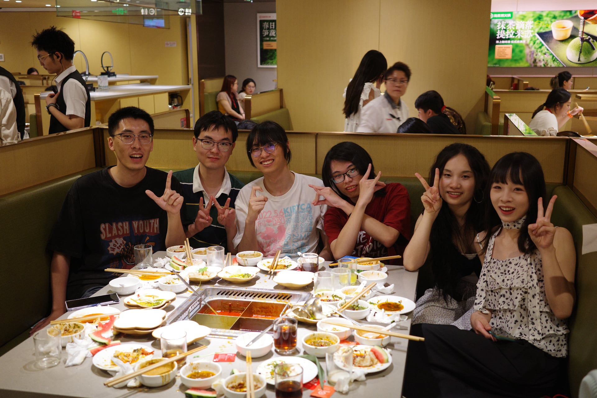
风格：R&B, citypop, funk等。融合现代与复古，跟随六点将近寻找内心的律动。
主唱：六天
吉他：点点 & 夏草
贝斯：小姜
鼓：叶子
BLUE ROSE-湛蓝玫瑰（2023-2026）
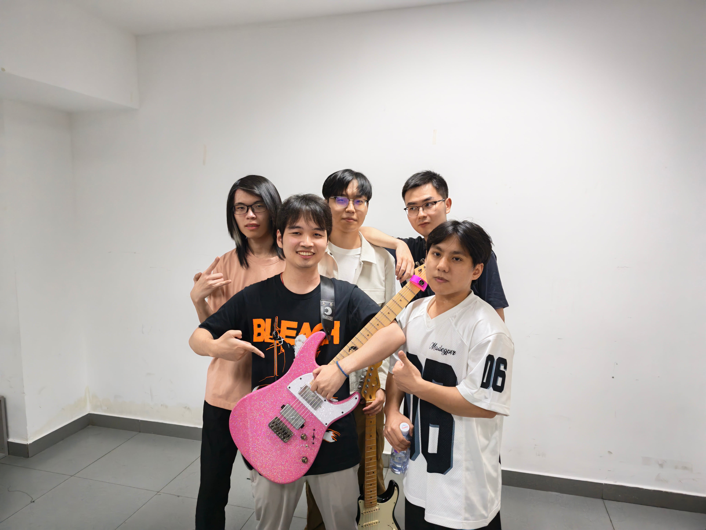
BLUE ROSE-湛蓝玫瑰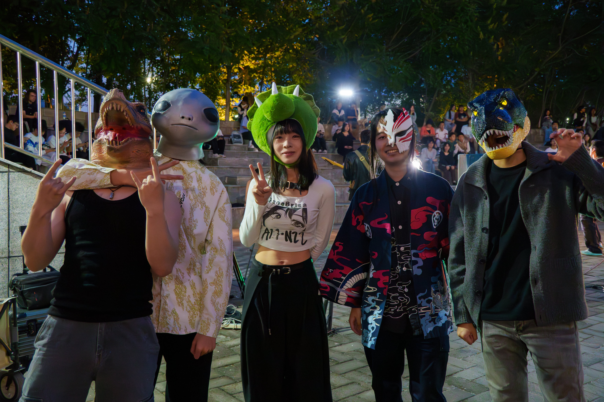
BLUE ROSE-湛蓝玫瑰 原阵容本队四个吉他手（现加上个鼓手）轮流当主唱和去弹贝斯。
成员：毛、白、昊天、翼咴、小尧LJY
前成员：夏目、小姜
肇事医院（Trouble Hospital）（2023-未知）
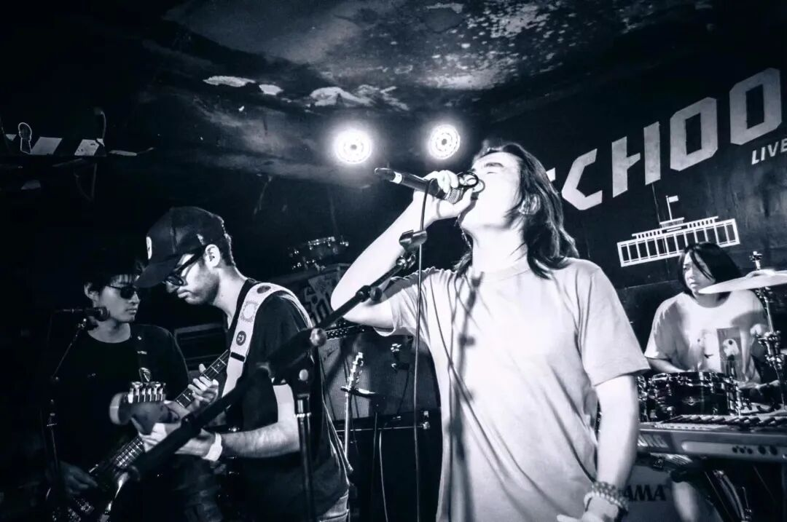
乐队于23年中旬北京成立，将乐队名与"肇事""医院""自医""问题""麻烦"等词胡乱联系在一起，或许是与我们都有某些神秘联系在。摆脱恐惧是我向您，所要索取的自由！
主唱/吉他：云
吉他：阿俣
贝斯：力诚
鼓手：吴振勇
Xuanhu 悬壶（2021-2024）
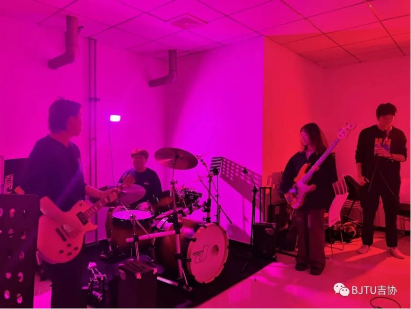
悬壶乐队成立于2021年10月，是一支新鲜、有趣、有活力的乐队。风格多变，主要以日摇和流行摇滚为主，希望在今后的音乐旅程中，能有更多碰撞与灵感。
主唱/节奏吉他：子豪
键盘：张帆
主音吉他：子悦
贝斯：小雨
鼓手：小卫
主音吉他：牛哥
半熟布朗尼
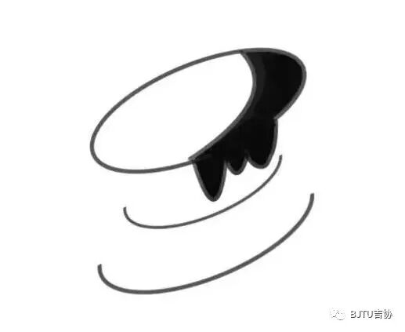
"半熟布朗尼"是一支由二年级同学组成的六人乐队，包括主唱、主音吉他、节奏吉他、鼓、贝斯、键盘各一名。作为以日摇风格为基调的乐队，主要练习ヨルシカ（夜鹿乐队）以及其他日摇乐队的作品。
Rooftop garden（2021-至今）
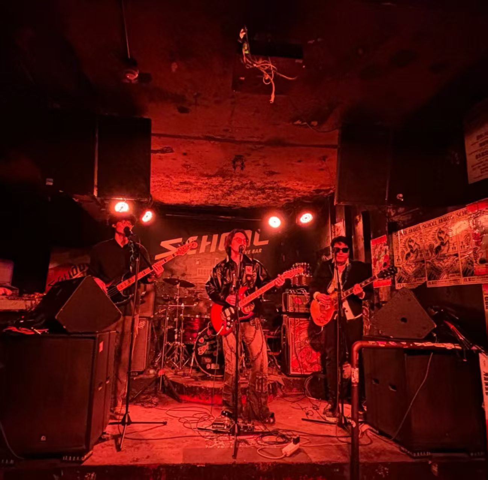
乐队名字来源于Beatles 1969年天台（Rooftop）那一次最后公开表演以及鼓手Ringo所创作的章鱼花园（garden）。一支英伦摇滚乐队，很Old school，深受Beatles、Queen等一众老牌摇滚乐队影响，乐队成员因为吉协因为音乐聚到一起。
主唱兼主音吉他：牛振宇
贝斯：王子悦
节奏吉他：郑子豪
鼓手：罗泽霖
幸运猫猫波（Lucky Katswave）（2022-2023）
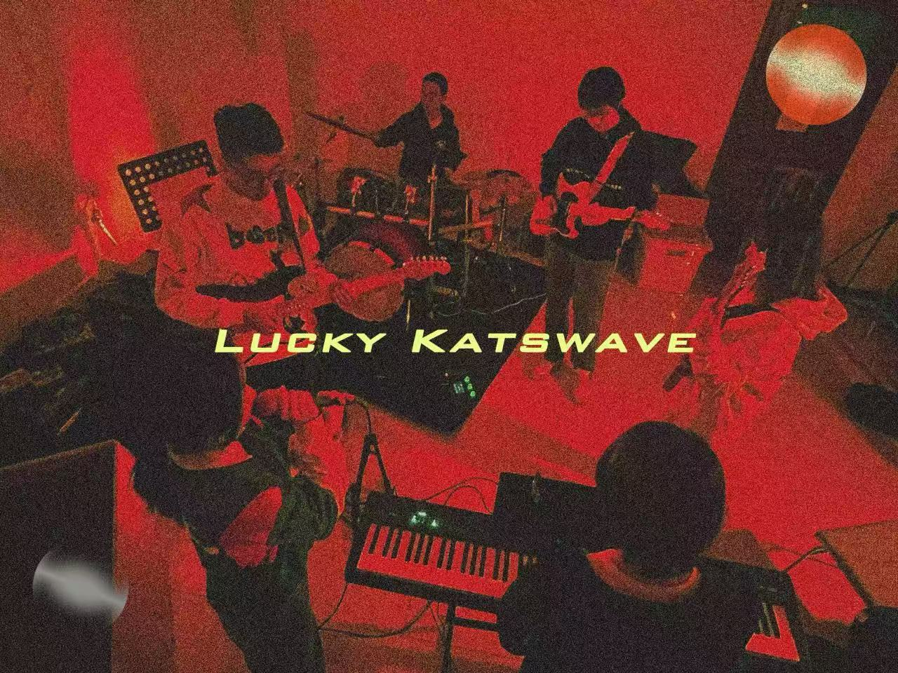
R&B/Funk/Neosoul/Citypop…律动之魂在燃烧，风格不定但希望做自己和别人喜欢的音乐。
Guitar：夏草 & 点点
Bass：小姜
Drum：泽泽
Key：阿尾
深度不学习（2021-2025）
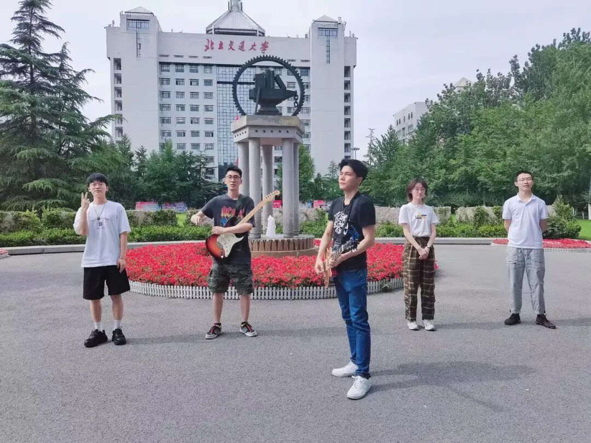
深度不学习乐队，成立于2021年5月1日，风格流行摇滚。乐队虽成立仅一个多月，已有4首原创歌曲，参加过交大青团二十周年演出。
主唱兼节奏吉他：杰哥
主音吉他：典哥
贝斯：旋哥
鼓手：泽哥
键盘：薏仰妹妹
雷伊（2020-2021）
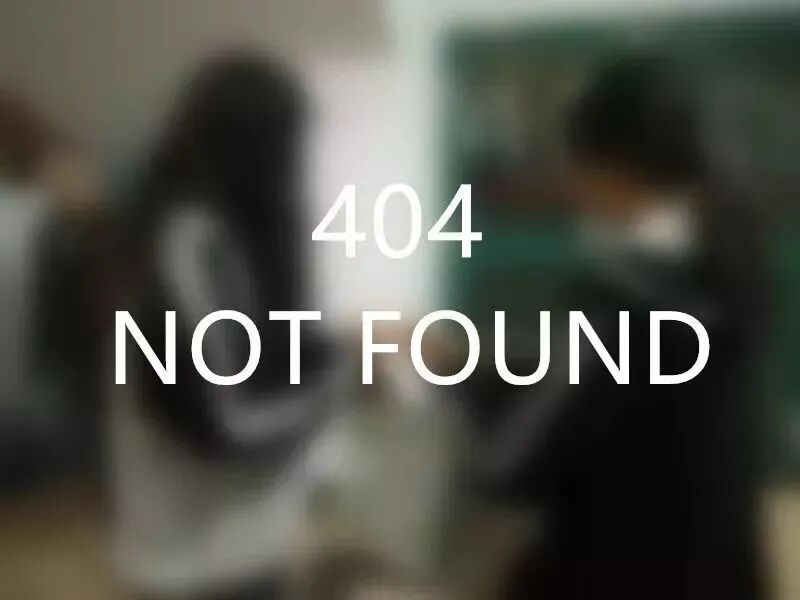
主唱：不愿透露姓名の小宁
主音吉他：一直在考六级の典哥
节奏吉他：二次元脆骨の翰子哥
贝斯：每天都很忙の杰哥
鼓手：只有帅气の小泽泽
键盘：又美又温柔のYY
Revolution Letterbomb（2021年-未知）
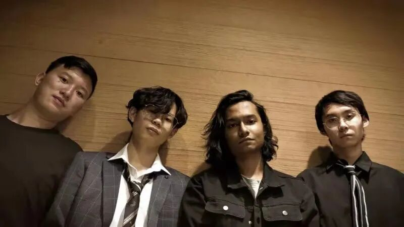
Revolution Letterbomb乐队，成立于2021年4月，风格为punk、grunge、rock。
Guitarist & Backing Vocalist：Syd
Vocalist & Guitarist：姬泽南
Bassist：李卓阳
Drummer：季嘉豪
E.P.（2021-未知）
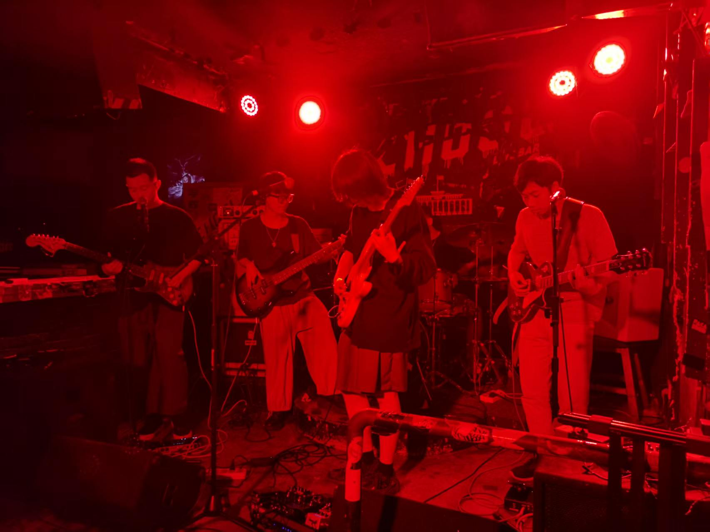
我看见巨大的符号升起，凝视着我，目送我到达死亡。尝试通过声音退行到风里，回归到失去秩序的地方。
Vocal：廖骜杰
Drum：李洵
Bass：伍旋
Guitar：王皓、敲
Inf.（2019-至今）
成立于2019年初。荒谬的观察者，与周身无意义的情绪，与无知的种子，与无限无稽的往复。
全称：Infinite Nonsense Fear
Guitar：嘉琦 / 正元
Bass：大熊
斯米诺（2020-未知）
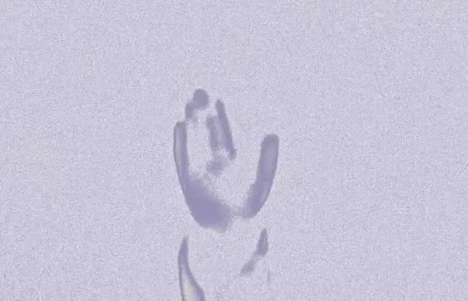
主唱：廖、敲
吉他：敲、皓
贝斯：琦
鼓：奇
是奇奇不是琪琪也不是齐齐（后更名为flur）（2020-2022）
IronWill（2020-2023）
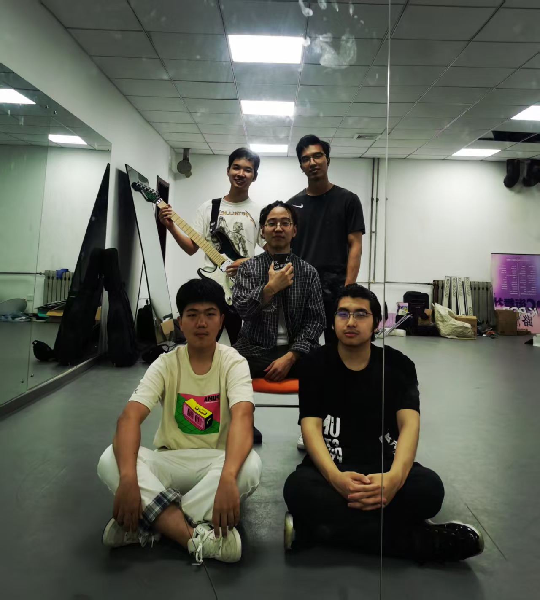
IronWill（铁志）乐队，起于机缘巧合，在不同风格间反复横跳，渴望溺死在音乐，生而永不复生。
主唱：邓力浩
吉他：毛俊彦
贝斯：王子琦
键盘：白浩志
鼓：许亮
北邙之中（2018-未知）
又是"百忙之中"的谐音，思靳、V9、Lucy都在为自己的学业和事业奔忙，在百忙之中，回望京城，那些混沌、莫名左冲右突的情绪与滋味都织入音乐当中。
成员：思靳、V9、Lucy
荒草公园（2018-未知）
废弃的游乐园荒草丛生，生锈的旋转木马摩天轮，代表着对消费娱乐时代的反思。
成员：新阳、李靖、思靳
南极碱（2018-未知）
吉他：lyf 陈柏霖
鼓：lzq
贝斯：zjy
马放南山（2018-未知）
主唱：刘承启
主音吉他：程麒
节奏吉他：侯俊
贝斯：刘少言
鼓：韩一玮
Fake Taxi乐队（2017-未知）
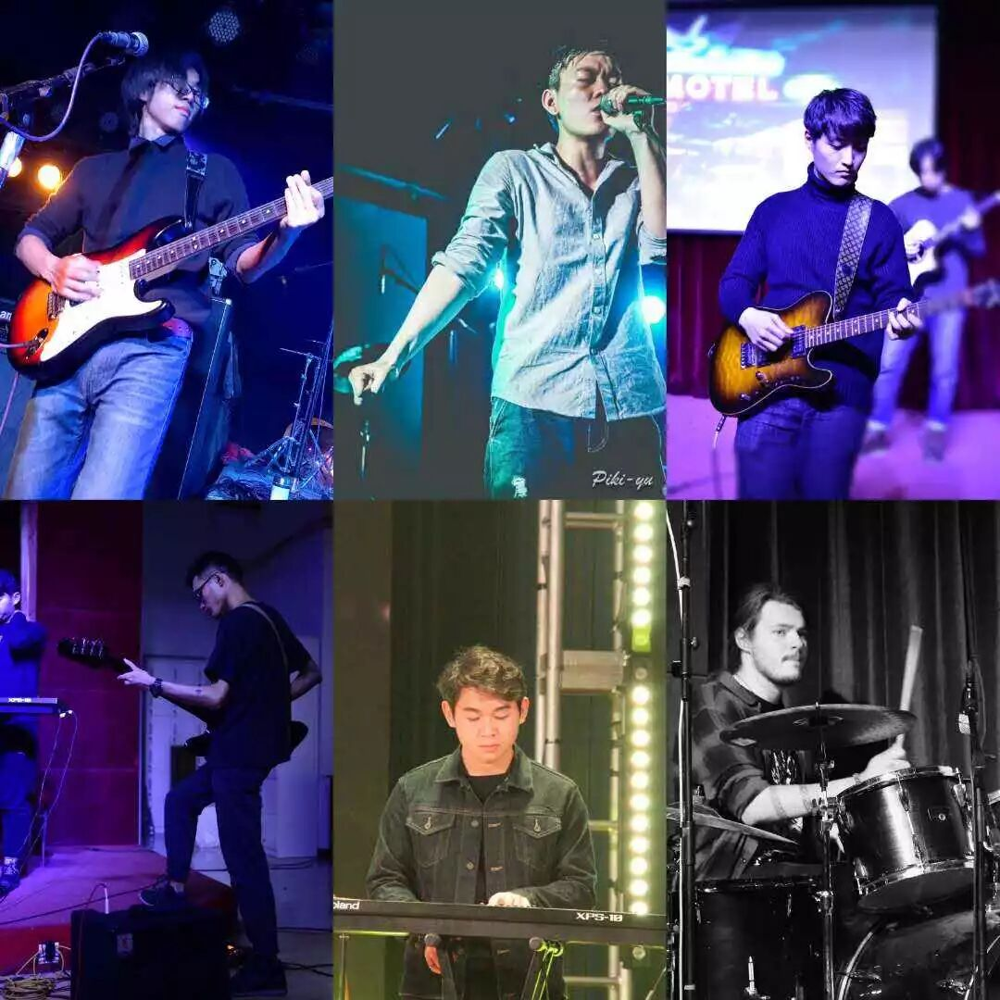
One night with Fake Taxi! Free ride and big party! 年轻的极右分子，极度狭隘的音乐口味，硬摇老炮型好学生乐队。
主唱：肖颖
主音吉他：赵墨旸
节奏吉他：金明威
贝斯：钟志豪
鼓：Roman（法国）
键盘：陈子飞
1乐队（2017-未知）
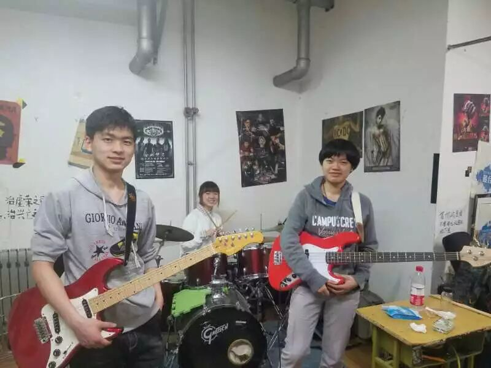
想成为单纯随意直接的blues与garage rock乐队，现在翻弹一些上个世纪的经典，由北京交通大学的三名工科学生组成。跟着我们，希望能带给你漂亮的跳跃、能哼出声的亲切感，演奏出律动里的情绪。
贝斯/口琴/主唱：金博涵
吉他：孙仁杰
鼓：彭红蕾
柠檬塑料乐队（2017-未知）
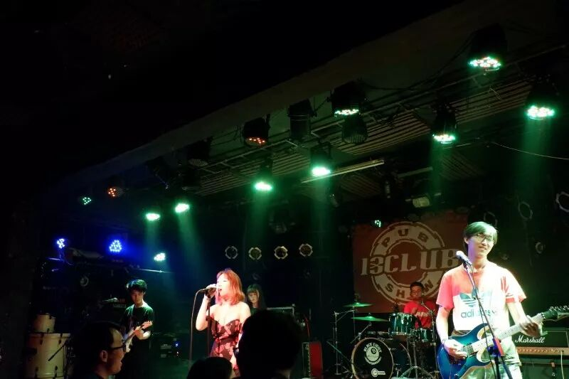
没有风格、啥都玩的菜逼鸽子乐队柠檬塑料。
主音吉他：李一帆
节奏吉他：孙正扬
贝斯：张婧怡
主唱：陈诗睿
鼓：谢天
伏特加三轮车乐队（2017-未知）
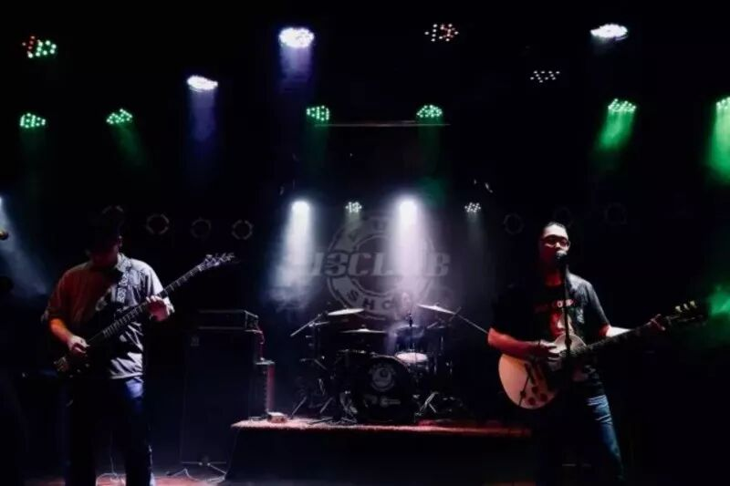
金属的心态，民谣的技术，玩朋克致敬一位学长。主唱是全校头发最长的男子，贝斯手曾是全校头发第二长的男子，鼓手喜欢偶像练习生。
主唱：何方溥
贝斯：杨子江
吉他：朱振月
鼓手：王筱肖
红砖乐队（2016-2019）
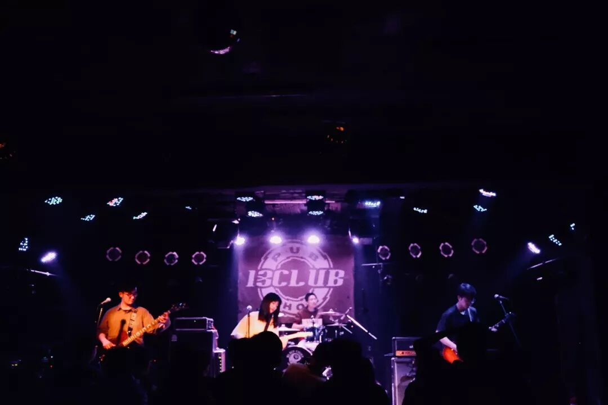
成立于2016年，喝酒聚餐次数大约是排练次数两倍，撸猫次数大约是喝酒聚餐次数四倍。
主唱：林宜萱
吉他：冯森、陈鑫
贝斯：杨子江
鼓手：韩一玮
等级制度（Hierarchy）（2016年）
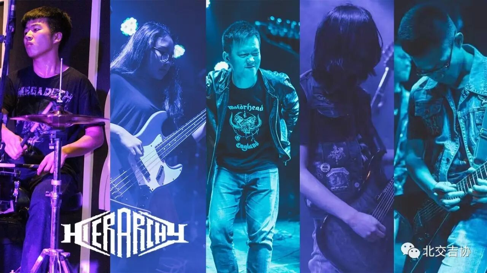
Iron Maiden的铮铮铁蹄经由岁月的洗礼，越过世纪的鸿沟，化成血液流淌在Hierarchy身上。军魂与战火，心灵求索与悲悯，囚徒与自由，英勇与悲壮……荡气回肠的音乐给每一双耳朵无私倾注着力量。我们将会死守在历史最经典的舞台，捍卫我们热血沸腾的重金属。
主唱：肖颖
吉他：周子焱 / 朱兵钺
贝斯：韩笑
鼓手：赵世远
Yin乐队（2016-未知）
Yin乐队，生于交大。风格诡异莫测，上可金属爆炸甩头，下可流行装逼土嗨。生活已经如此多娇，所以我们必须风骚。
主唱：肖悦成
吉他：赵子鉴
贝斯：孙基诚
鼓手：黄方琦
贝壳（2015-2019）
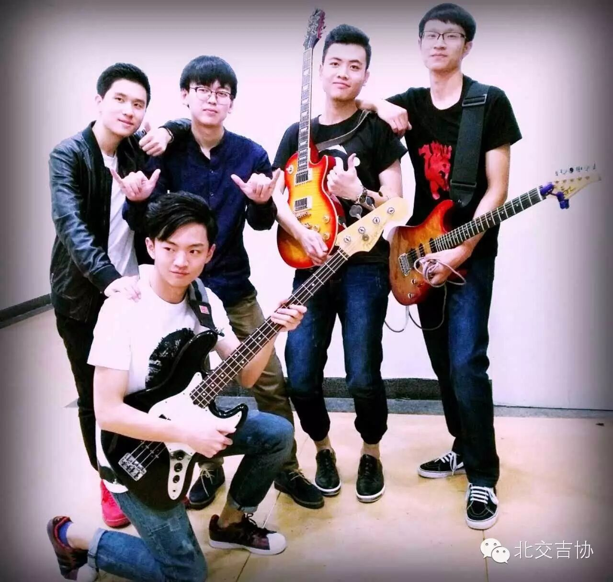
2015年的秋天，坐标北京交通大学。破旧的地下室，指尖的音符，嘶吼的嗓音，每一次击打跳起的火花，击穿沉闷的空气，与灰尘共舞。理工科与艺术的机缘——贝壳的诞生。他们无心定义风格，亦摒弃标签，只愿追逐着音乐的尾巴，把这如酒般的大学生活，一饮而尽。
主唱：张万鹏
主音吉他：张丹阳
节奏吉他：郑澳
贝斯：刘昱希
鼓手：赵建哲
猫狗兽（2015-未知）
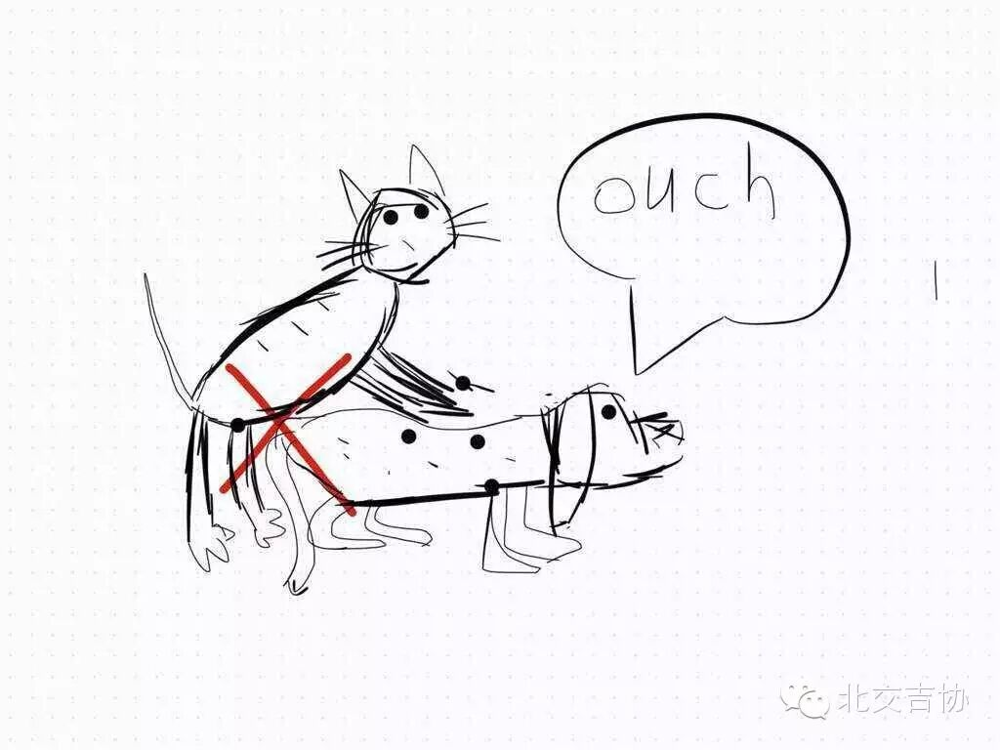
纯爱朋克，唯美校园风。假如生活是肮脏的，那么你就是肮脏的。假如生活是美好的，那么你就是美好的。少矫情，多微笑，少玩手机，多听纯爱朋克，爱我你就拍拍手，爱我你就点点头！
主唱：祝轩宇
吉他手：于健
贝斯手：洞哥
鼓手：郭欣桐
STEAL（2016-2018）
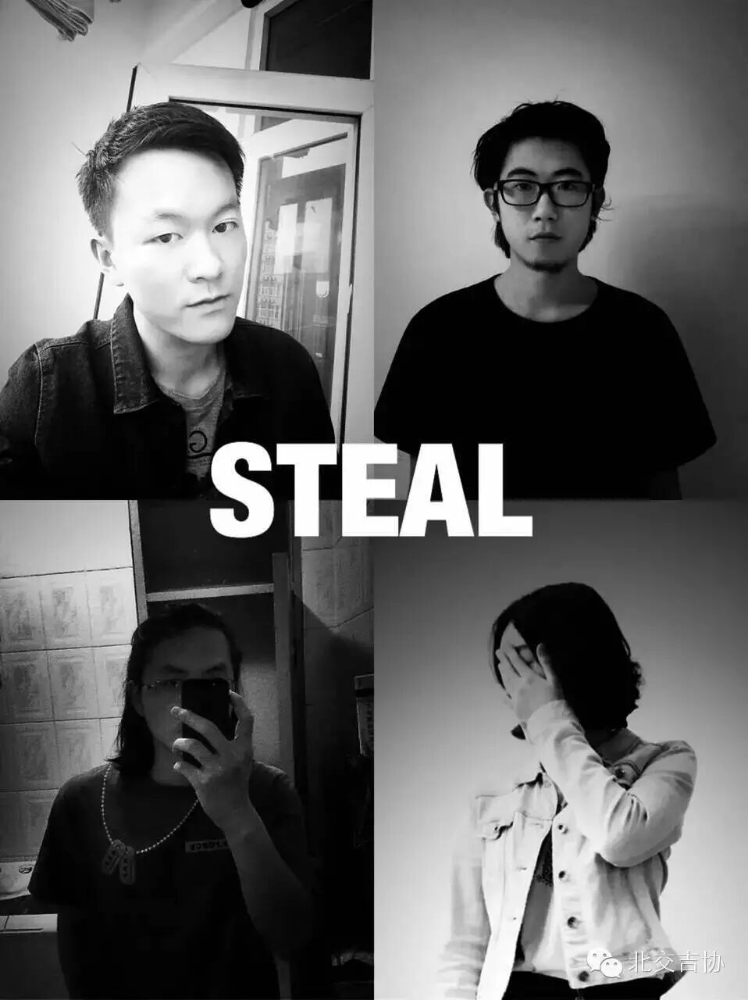
STEAL，原铁子弹乐队，以7080年代的布鲁斯硬摇滚与华丽金属音乐风格为基石，糅合当代大学生的小情绪与复古情怀，做有故事与没故事的音乐。在洛城噪声中寻找力量，在垮掉一代中寻找思考，带着无底的问题，在繁华都市继续着上世纪的梦。
主唱：肖颖（铁蛋）
吉他：朱振月
贝斯：刘昱希
鼓手：席晓强
铁子弹（2015-2016）
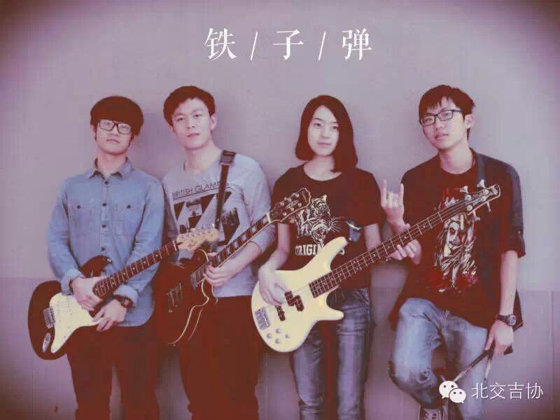
铁子弹（Iron Bullet）乐队，成立于2015年4月底，由北交吉他协会大一和大二学生成员组建。乐队由四个热爱布鲁斯硬摇以及金属乐的年轻人组成，正逐渐努力成为一支温柔的硬摇乐队。一颗射穿物欲横流纸醉金迷的世界，在心头绚丽绽放的子弹。
主唱/吉他：肖颖
贝斯：门映雪
吉他：沙茜
鼓：詹浩文康
白皮书（2014-未知）
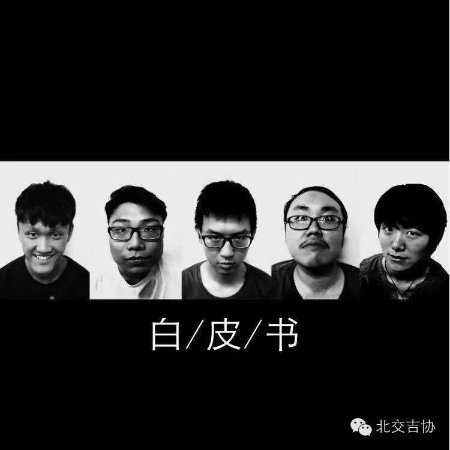
白皮书乐队，成立于2014年，由北京交通大学和北京林业大学的在校生组建。白皮书，一国政府或议会正式发表的重要文件，其看法和观点具有一定的代表性和权威性，但通常无法律作用。以此为名，是一种自讽，也是一种希冀。乐队后朋克的风格为校园音乐带来独特的气息。
主唱/吉他：刘家辉
吉他：胡方权
BASS：蒋若涵
鼓手/采样工程：包玉树
和声/其他乐器：邓钰
裂魂（2013-未知）
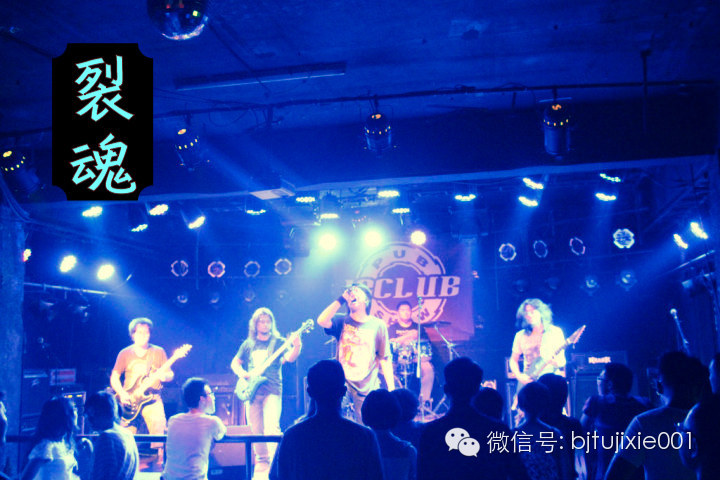
魂本无形，裂而见隙。五片来自九州各处的灵魂熔于一体，不为所限，用内心对世间的感悟擦出灵感火花，演绎这五片裂魂独有的金属之声。裂魂乐队，一支充满力量充满特点的金属乐队。
药坞（2013-2017）
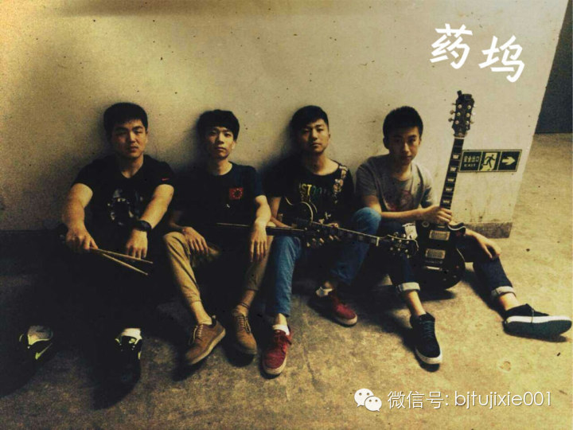
药坞乐队成立于2013年11月，中国特色社会主义风格，音乐中不乏硬摇、BLUES、民族等元素。欲往药坞求灵药，求得灵药治俗尘。乐队认为作品是一种表达方式，其吐诉和讲述，乃至影响的功能是他们所看重的。
主唱/吉他：肖寒
吉他：周云坤
贝斯：马毅辉
鼓手：杨松霖
Masker
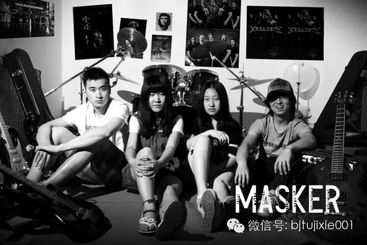
Masker乐队，由学校各个学院不同年级的学生组成，为听众带来硬摇滚的独特魅力。
沉迷（2011-2015）
沉迷乐队，一支原创能力很强的乐队，始创于2011年，2013年2月正式确定阵容。风格包含Hardrock、Blues、Grunge等，注重歌曲的旋律性和编配。2013年迷笛校园乐队大赛全国冠军，并包揽最佳吉他手和最佳主唱荣誉。
主唱/吉他：杨仲旺
吉他/和声：李轶炜
贝斯：周怡萍
鼓：赵东晓
画廊
（待补充：活动照片集锦）
社团活动
预约表
吉协的社团性质决定了我们需要供乐队成员练习和排练的空间，也就是活动室。我们的活动室已由嘉园地下室A28-40转变为学活505，从专属活动室转变为和学校其它社团的共用活动室。
吉协坚持为每一个热爱音乐的成员提供便利，奈何时间和空间都是有限的，所以排练室施行每周一开放统一预约，供各队负责人查看和预约合适且空闲的时间。
小程序使用：每位成员都需要在小程序上注册账号，之后注册队伍，由队长拉人完成队伍的注册。在管理员审核通过后，即可在预约界面查看并预约排练室空闲时间。我们强烈建议每支队伍将已经排好的歌曲同步在小程序上，方便演出的规划。
目前（9月12日），小程序尚未完全准备好。因此在正式通知之前，我们将使用旧的预约表。
为避免人数过多过杂，我们采取的措施是每个队仅出一人进入排练室预约群，且只有经过排练室负责人审核的队负责人能在小程序预约，尽可能确保大家都能公平有序进行预约和排练，达到最大利用率。
音箱使用说明
简述
输入
吉他音箱的输入主要有两种方式：
- input：位于前面板，代表使用箱头的前级与后级；
- return：位于箱头背后，代表仅使用箱头的后级。
大多数情况下，建议仅使用箱头的后级。此时需要在效果器上关闭箱体模拟，以获得更稳定的音色，同时确保前级模拟（pre-amp）和箱头模拟（amp）已经开启。
切换音色
若音色调试不符合预期，需要使用前级时，可按以下方式切换：
- 关闭效果器的箱头模拟；
- 仅使用效果器上的非箱头类效果接入音箱的 input；
- 箱头优先使用 clean 箱头；
- 失真源优先使用效果器上的单块失真。
这样更便于快速对比不同音色，并减少因箱头模拟带来的色彩偏差。
单次使用时长
单次使用时长不应超过 4 小时。每次使用结束后，应将音箱关闭并进行冷却，避免电子管因高温影响正常工作状态，或因过热导致音箱失效。
箱头与箱体的连接方法可参考 zhuanlan.zhihu.com。对于黑星音箱，通常只需将箱头的 mono 与箱体连接的 mono 对接即可，阻抗一般为 16Ω。
电气安全
排练室是一个会接入大量电气设备的场所，请确保所有设备都是完好的、没有电路故障或是电路元件损坏的。建议经常对自己的设备进行检查，电吉他电贝斯需要保证接地良好，合成器等数字设备则要注意电源适配器的电压和正负性是否匹配。 同时使用时需要符合安全规范，保持手部干燥，避免在排练时触碰带电部分，特别是分体式电子管音箱连接箱头箱体的连接线。使用完设备后应及时关闭电源，保持排练室的安全环境。 在冬天或初春，天气干燥，静电频发。建议乐手在接电之前先脱去易起电的衣物，然后触摸一些大型或接地的金属件，以释放静电。如果自己的体质是易起静电的， 千万不要在触碰金属弦的同时开门、摸设备的导电部分或其他金属物体，以防吉他到音箱的接地不良，从而导致漏电伤害到自身。正确的做法是扭掉吉他的音量，放下吉他，寻找接地金属件释放静电，再进行其他操作。
一定一定要遵守音箱的正确使用规范：所有吉他音箱，都应该先确认power与standby开关处于关闭状态。接下来，连接好所有需要接入音色链的设备，接好所有供电插头。 再确认音色链全部接口和顺序均准确无误、音色链上没有裸露的接头，所有接头都牢固地接入接口。最后，打开power开关，确认红灯亮起并等待三分钟及以上，等暖机后再打开standby开关至需要的档位进行演奏。 贝斯箱流程一致，也同样需要暖机，不过只需要确认一个开关就好了。
在standby模式下，音箱的电子管会保持工作状态，但是音箱会停止输出切断输入，以避免电子管过热。此时可以拔线。但standby模式不可保持超过半个小时，否则可能损伤电子管。
音色链故障的排除与归因
如果在进行了音箱的开关机操作后，发现演奏时没声音或事音色异常，则我们需要进行音色链的排除与归因。
首先我们要确认是否有线路连接错误或接触不良。接着我们要确认乐器音量旋钮是否开的太小、效果器输出音量或增益是否过小、音箱的前后级增益和总音量输出大小是否合适。注意每次插拔线都要将 如果通过重新连接和参数调整仍不能解决问题，则需要进行控制变量的对比试验，确认是线材、吉他、效果器还是音箱的问题。如果是吉他、效果器或线材的问题，请自行解决； 如果是音箱的问题，请立即关闭音箱并断电，同时联系排练室负责人。
音箱的前后级增益和总音量输出千万不能开太大！推荐前后级增益均不超过70%，总音量输出大小不超过50%。
禁忌事项
- 不要在箱头正在工作时拔插输入接口，尤其是 return 与 input；如果必须拔插，请先确保箱头处于 standby 模式。热插拔时的"噗"声可能会导致功放或喇叭损坏。
- 不要使用过细的线材连接箱头与箱体。即使接口尺寸相同，也应使用专门用于音箱连接的粗线，避免不出声、线材过热或声音变闷。
- 贝斯音箱需正确连接。主动贝斯通常接主动输入口，被动电路则应接高阻抗输入口；主动电路接高阻抗口时，可能导致破音或烧毁放大电路。
*若需要进一步确认具体连接方式，建议先确认音箱的输入类型与设备阻抗，再进行实际接线。
*若设备在排练时出现了损坏，请由乐队负责人及时报告排练室负责人，并协商后续流程。
*想对于各类设备的技术细节有更进一步的了解，建议咨询认识的各领域大佬。
*推荐电吉他手都进行一些基本的电子电路知识学习，了解音响、效果器、电吉他的工作原理。可以参考这位up的视频进行一些基本的了解点击了解
吉他课
吉他课程是协会面向校内音乐爱好者开设的常规培训课程，主要分为民谣吉他基础班和提高班。课程以民谣吉他为主，兼顾基础乐理、弹唱、指弹、拨片演奏、现代音乐风格及乐队合奏等内容，欢迎零基础的同学报名。
班级与收费
两个班型分学期开设：一般每学年第一学期开设民谣吉他基础班，第二学期开设提高班。
民谣吉他基础班
- 收费标准：400 元 / 10 节课（参考价格）。
- 适合人群：喜欢音乐、对吉他感兴趣，但没有任何基础，或曾初步自学但不系统的同学。
教学目标：以民谣吉他为主。
- 运用所学基本知识及技巧，弹唱自己喜欢的歌曲；
- 掌握基础乐理知识，同时开拓眼界，提高音乐素质与艺术修养；
- 初步具备歌曲的编配与创作能力。
提高班
- 收费标准：500 元 / 10 节课（参考价格）。
- 适合人群：已完成基础班学习，或已有一定基础、希望进一步提升的同学。
教学内容：
- 指弹部分：指弹基本手法与常用、特殊技巧；几种风格的独奏经典曲目。
- 拨片使用：拨片的使用方法及部分经典独奏曲目。
- 现代音乐风格学习与训练：pop、rock、funk、blues、reggae、metal 等，包括吉他、贝斯、鼓及乐队合奏等内容。
- 乐理部分：主要学习歌曲创作及即兴演奏。
课时与收费说明
- 每节课约 2 小时。
- 每学期一般安排 10 节课左右。
- 收费按实际商定的课时执行，如需调整会提前通知。
上课安排
- 授课教师：基础班和提高班均从校外聘请老师授课。
- 上课频率：在无月考等冲突的情况下一般每周一节；若与月考或其他重要安排冲突，课程可能顺延，具体以通知为准。
- 上课地点：暂定学活 505 排练室；若条件允许优先在学活上课。
- 教学反馈：老师课前会复习上一节内容；若上课时间冲突，可课下联系老师沟通。
如何报名
- 招生时间：一般在百团大战招新结束后开始招生。
- 班型安排：一般每学年第一学期开设基础班，面向零基础同学；第二学期开设提高班，是基础班的延伸，欢迎继续报名。
- 报名流程：先登记意向 → 参加试听课 → 试听后确认是否正式报名。
- 试听课：每一位有意向的同学都有试听机会，一般每学期第一节课组织试听。
具体报名方式、开班时间与上课时间以课程群通知为准。
师资介绍
董波老师，1983 年考入东南大学桥梁设计专业，并一见如故地喜欢上了充满魅力的吉他。在刻苦学习与训练的同时，他组建了第一支大学生乐队，毕业前创建了东南大学吉他协会，并成功举办了第一届大学生吉他大奖赛。毕业后加入中国交通部电声乐团任吉他手，后相继组建了数支乐队，并多次参加吉他讲学活动，受到学员们的一致好评。
董老师至今已培养出很多优秀的学员，如《花》乐队的贝司手郭阳、朴树乐队吉他手苗佳、老狼乐队吉他手杨颖彪、YAMAHA 乐坛惊雷大奖赛冠军《希望乐队》、金奖吉他手夏伟楠、百事可乐盖世群音大奖赛北京赛区冠军《斯巴达》乐队、最佳吉他手程功、冰红茶冰力先锋冠军乐队《意念力》、最佳鼓手梁潇、全国乐器展贝塔斯瑞吉他大奖赛亚军冯军、签约太合麦田唱片公司的女歌手唐红菲等。
四年的理工科学习使他的讲课充满激情而又逻辑清晰。他把多年总结的音乐知识与演奏技巧重新修订，用简洁明快、活泼生动的语言把现代音乐曲风的关键讲透，深受学生欢迎。多年来，他还一直担任清华大学、人民大学、中央民族大学、北京外国语大学、中央美术学院等近十所著名大学的吉他教师及乐队导师。
琴身上蕴含着技巧、智慧和力量，乐声中荡漾着情感、哲学和信仰。
——董波老师的座右铭
演出活动
吉协的演出活动按照组织规模分大型和小型。大型活动主要是每学期一般的两次专场和一次路演，包括每学年第一学期的百团招新。 有时候有可能会有学校组织的大型音乐活动，如团聚今夜。小型活动则灵活很多，只有每学年第一学期的乐手见面会相对固定。 大型活动的特点是场地大、乐队多、设备全。小型活动的特点是场地不大，一般没有严格的内容安排，主要形式是即兴表演。
无论何种活动，我们都会攥写公众号推送，在大群里通知大家。 如果有乐队表演征集，我们会在推送制作之前提前征集。请乐队各位关注排练室群通知。
吉协不会对个人和乐队有任何入社的强制性面试和技术要求， 只要参与社团活动时不损坏吉协资产、遵循社团活动的各项流程、与社团的同学们友好相处，留在大群即可。 对于大型演出的曲目，为了保证效果，会有社团的管理层人员审核乐队申报的曲目的完整度，并评估是否能够得到校方的批准。 我们会尽力帮助每个乐队获得参与的机会，尽可能实现大家参加活动的意愿。
了解北交吉协
我们是谁?
北京交通大学吉他协会成立于2002年，是北交大历史最悠久的音乐社团。吉协没有复杂的层级组织结构、没有门槛和无聊的面试，无论你是乐手还是乐迷都可以加入，我们只有一个要求:你对音乐保有从始至终的理解和热爱。
所以，吉他协会并不是仅针对吉他手的组织。实际上，我们是以乐队活动为轴心的音乐社团，我们欢迎吉他手、贝斯手、鼓手、键盘手、主唱等各样人才。
音乐是一种非常主观的艺术形式，吉协现有成员们喜欢音乐风格及发展走向也大不相同。与其说和主流音乐所割裂开，不如说我们更愿意包容和接纳相对小众或另类的音乐。此外，我们希望能做出更多的原创音乐作品来输出我们的思考与情绪价值。
吉他协会从成立至今二十多年的时间里出现过非常多优秀的乐队和乐手，我们的前辈沉迷乐队曾在2013年迷笛全国校园乐队大赛中夺获冠军，并包揽了最佳吉他手与最佳主唱两大奖项;2014年索尼校园乐队大赛中，前辈药坞乐队曾获最佳人气及最具摇滚精神的荣誉，近两年也有退化立场、肇事医院等乐队带着他们的原创作品活跃在各大音乐现场。
未来我们仍会竭尽所能，为全校的音乐爱好者们提供更多享受音乐的演出活动。
刻在石头上的句子（投稿请发至管理员邮箱）
1.来自北交emoking——网友：超厉害的傳奇女酮王
看完牛来真的很感动，感觉被接纳了。有种即使多么不一样也可以一点点长大的安心感。 尽管命运的泥头车还是把自己撞的粉身碎骨，但一点一点就能走到明天的明天。 从死到生，从生到死。被落下的小牛也能讲讲自己微不足道的故事。 而且感觉有些画面真的很好看啊😭，树和果子，还有悬崖，草地的景色。他们过小溪讨论将来，妈妈牺牲， 还有牛来面对泥头车以及最后歌出来，牛来四条腿跑的时候都很感人，哭得很难受。
我怎么会这么幸运呢
为什么你刚好和我说话
为什么偏偏你是个这么真诚的人 这么细心的人这么爱别人的人怎么你就是这种什么话都回复的人啊我好喜欢你
和你聊天好开心
你发的那么一长段消息其实发到后面已经没那么生气了吧 只是试探我一下 其实我感受到了好可爱
我会好好珍藏和你的一切的
我不会放弃的
最近一直看你直播觉得你和我性格挺合适的 951你和我交往吧！ 我会让你幸福的 我今年21岁休学打工中 想跟你去吃好吃的玩游戏出去玩还有做各种有意思的 我是真心的你也考虑考虑 你要是真的要面基记得真的只能跟我因为说实话 这样好危险我真的不想你做危险的事想和你在一起一辈子
2.广东人鲜嫩
你很特别，你和我见到的其他长发男都不一样
3.AAAAA
你给我一种疏离感，两种蔬菜感。
通讯录
吉协相关人员联系方式：
1.马岚琪 电话：15390441010； 微信：A15390441010； 微信公众号：anabsentalienaliveanywhere
2.夏妤萌 除了fps，可以在蒸汽找到我：1142890410
3.喜欢stereolab的人请和我成为朋友！电话：18815537102 微信：lyf18815537102
网站维护人员邮箱：GuitarAssociationBJTU@outlook.com
参考文献
以下为本文中提到的外部参考链接。
外部链接
- 音箱（箱头与箱体）连接方法：zhuanlan.zhihu.com
- 电子电路基础知识：B站视频
关注吉协喵，关注吉协谢谢喵！